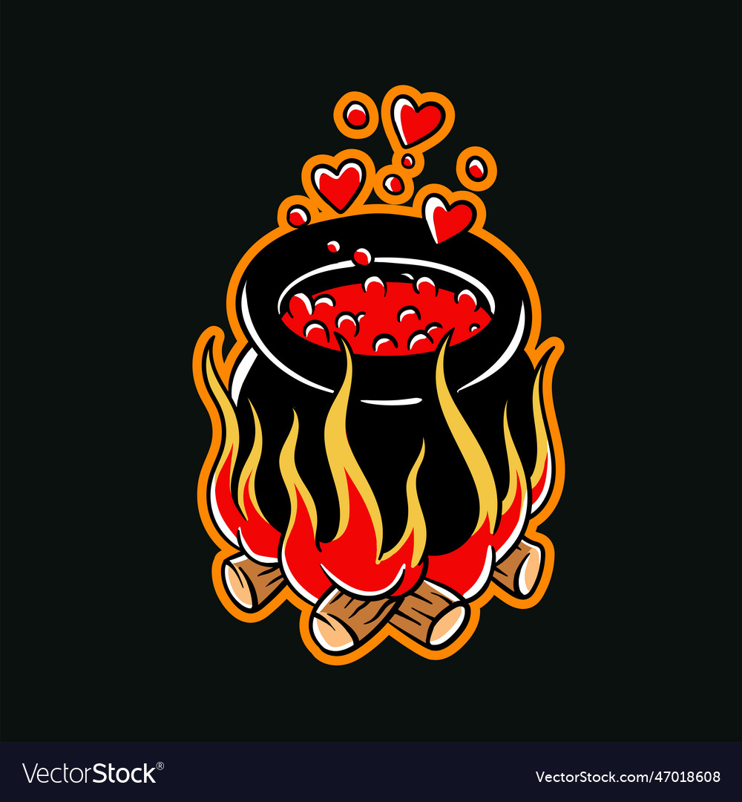

Love Potion Recipee
Crafted with passion, brewed for the heart
Unlock the deepest secrets of love with our exclusive Potion of Everlasting Love — the ultimate elixir designed
to stir the heart and enchant the soul. Whether you're seeking to deepen your current connection, manifest a
new romantic adventure, or simply attract more loving energy into your life, this potion is your trusted ally in
matters of the heart.
ingredients
- Rose Petals — Symbolizing pure love, bringing warmth and affection to any bond.
- Cinnamon Bark — For passion and fiery attraction, stimulating both desire and connection.
- Blood from your enemies - Because there's a very thin line between love and hate.
- Lavender Essence — To soothe and balance the emotions, ensuring harmony in love.
- A splash of codependency - A toxic ingredients for a clingy concoction
- Honey — The sweetness of true affection, binding hearts with its gentle magic.
- Moonstone Infusion — Harnesses the powers of the moon to guide you through the tides of romance.
Steps
- The Sacred Ritual: Gather your ingredients under the light of a full moon.
- The Heart of the Potion: Infuse the rose petals and cinnamon bark in a cauldron, stirring clockwise three times to ignite passion.
- The Calming Influence: Add the lavender essence to the mixture, stirring counterclockwise three times to soothe emotions.
- The Sweetening: Pour in the honey, stirring clockwise seven times to seal the bond of love.
- The Lunar Blessing: Add the moonstone infusion, stirring slowly as you gaze at the moon, whispering a wish for eternal love.
- The Dark Ritual: Carefully add a few drops of your enemy's blood to the cauldron, stirring counterclockwise three times, whispering a curse of eternal love.
- The Addictive Embrace: Pour in the splash of codependency, stirring clockwise until the potion bubbles and froths.
- The Final Incantation: Chant the following incantation: "Love, hate, a dangerous game, a twisted fate, a lover's pain."
- The Potion's Power: Let the potion cool, then store it in a dark, secluded place. A single drop can ignite a passionate fire or a toxic obsession.
Warning:Use this potion with caution. Side effects may include:
intense jealousy, clinginess, and a general disregard for personal boundaries.